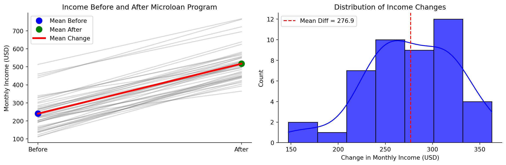
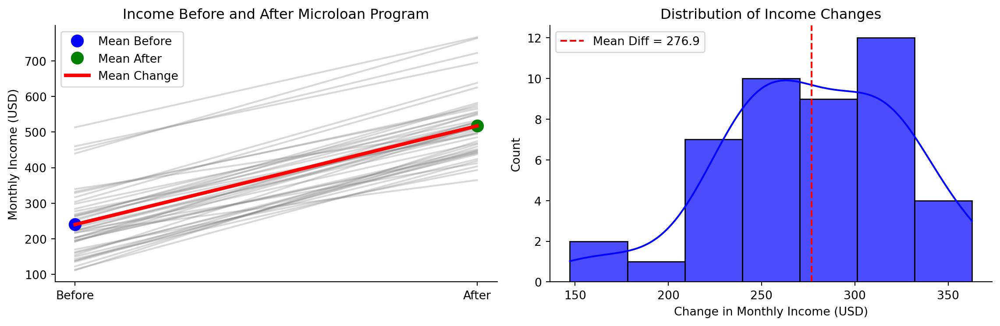
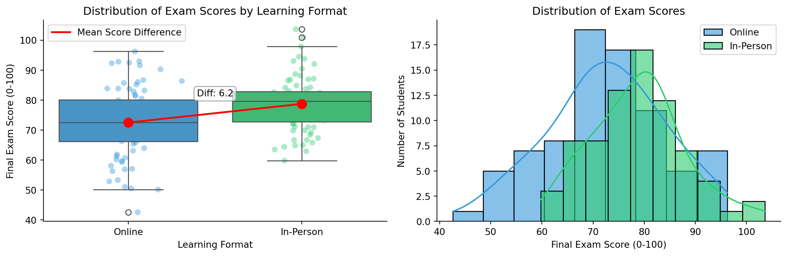
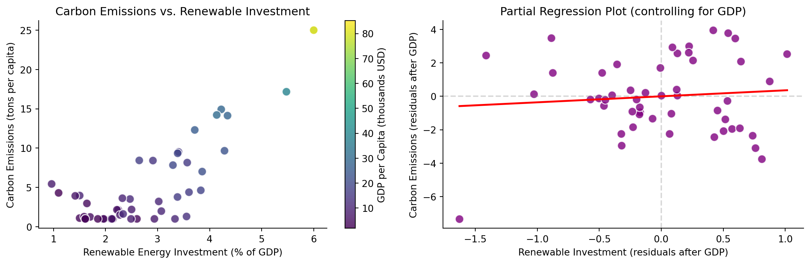
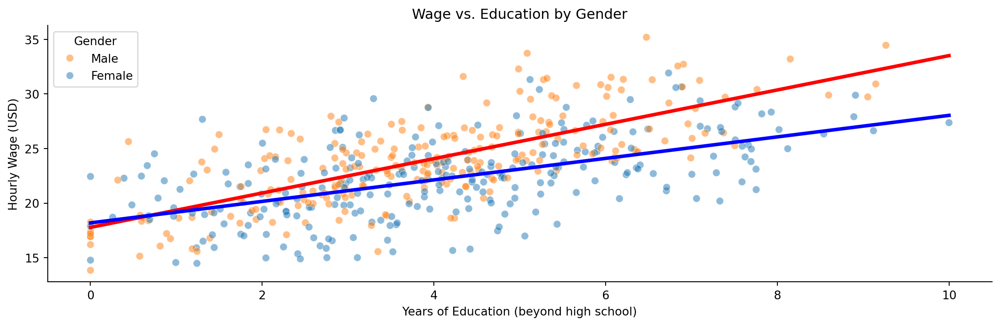
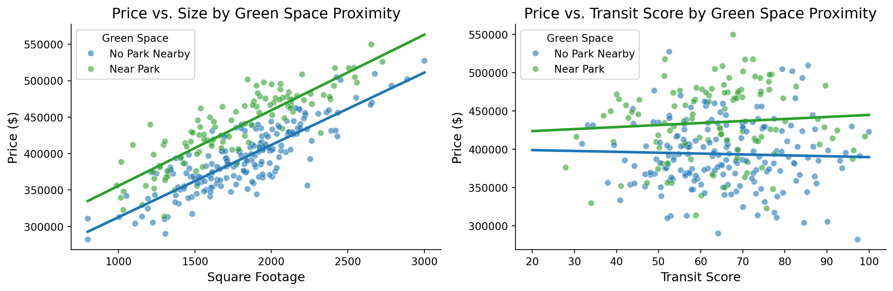
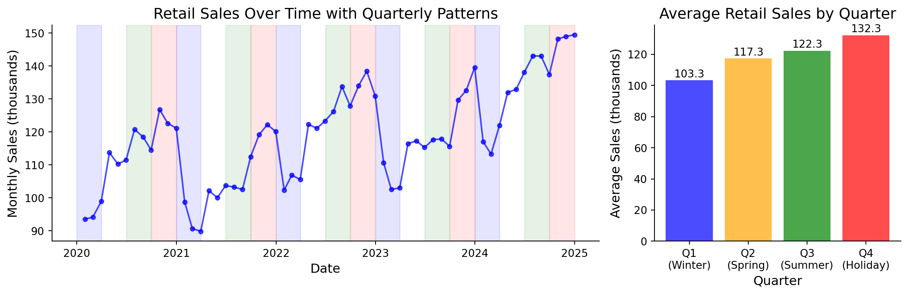

The economist’s data analysis pipeline.
Matching research questions with appropriate statistical approaches
Focus:
Do microloans improve income in low-income communities?
Research Question: Does a microlending program increase average monthly income in a low-income community?
The Data:
Do microloans improve income in low-income communities?
Visualization: jittered scatter, boxplot, line graph, histogram

Model: Paired Sample t-test
\[\text{income_change} = \beta_0\]
Do microloans improve income in low-income communities?
Model: Paired Sample t-test
\[\text{income_change} = \beta_0 + \epsilon\]
# Create a dataframe with the differences
data = pd.DataFrame({'income_change': income_change})
# Run a one-sample t-test as regression
model = smf.ols('income_change ~ 1', data=data).fit()
print(model.summary().tables[1])Interpretation:
Does online learning yield different outcomes than in-person learning?
Research Question: Does learning format (online vs. in-person) affect student performance in economics courses?
The Data:
Does online learning yield different outcomes than in-person learning?
Visualization: boxplot, histogram

Model 2: Two-Sample t-test (comparing groups)
\[\text{Score} = \beta_0 + \beta_1 \text{Online} + \epsilon\]
Does online learning yield different outcomes than in-person learning?
Model 2: Two-Sample t-test (comparing groups)
\[\text{Score} = \beta_0 + \beta_1 \text{Online} + \epsilon\]
# Create dummy variable
data['online'] = (data['Format'] == 'Online').astype(int)
# Run regression
model = smf.ols('Score ~ online', data=data).fit()
print(model.summary().tables[1])Interpretation:
How does investment in renewable energy affect carbon emissions?
Research Question: What is the relationship between renewable energy investment and carbon emissions across countries?
The Data:
How does investment in renewable energy affect carbon emissions?
Visualization: scatterplot

Model 3: Multiple Regression with Control Variable
\[\text{Carbon_Emissions} = \beta_0 + \beta_1 \text{Renewable_Investment} + \beta_2 \text{GDP_per_capita} + \epsilon\]
How does investment in renewable energy affect carbon emissions?
Model 3: Multiple Regression with Control Variable
\[\text{Carbon_Emissions} = \beta_0 + \beta_1 \text{Renewable_Investment} + \beta_2 \text{GDP_per_capita} + \epsilon\]
# Run multiple regression
model = smf.ols('Carbon_Emissions ~ Renewable_Investment + GDP_per_capita',
data=countries).fit()
print(model.summary().tables[1])Interpretation:
Does the gender wage gap vary with education level?
Research Question: Does the gender wage gap differ across education levels?
The Data:
Does the gender wage gap vary with education level?
Visualization: scatterplot, multiple groups

Model 4: Interaction Model
\[wage = \beta_0 + \beta_1 edu + \beta_2 female \times edu + \beta_3 exp + \epsilon\]
Does the gender wage gap vary with education level?
Model 4: Interaction Model
\[wage = \beta_0 + \beta_1 edu + \beta_2 female \times edu + \beta_3 exp + \epsilon\]
Interpretation:
How does transit access and green space affect housing prices?
Research Question: How does public transit access and green space proximity affect residential property values?
The Data:
How does transit access and green space affect housing prices?
Visualization: scatterplot, multiple groups

Model 5: Multiple Regression with Categorical and Continuous Predictors
\[\text{price} = \beta_0 + \beta_1 \text{sq_ft} + \beta_2 \text{transit_score} + \beta_3 \text{green_space} + \epsilon\]
How does transit access and green space affect housing prices?
Model 5: Multiple Regression with Categorical and Continuous Predictors
\[\text{price} = \beta_0 + \beta_1 \text{sq_ft} + \beta_2 \text{transit_score} + \beta_3 \text{green_space} + \epsilon\]
# Normalize square footage for easier interpretation
housing['sq_footage_100s'] = housing['sq_footage'] / 100
housing['transit_score_10s'] = housing['transit_score'] / 10
# Run multiple regression model
model = smf.ols('price ~ sq_footage_100s + transit_score_10s + green_space',
data=housing).fit()
print(model.summary().tables[1])Interpretation:
How do seasonal patterns impact retail sales?
Research Question: How do retail sales vary by season when accounting for overall trends?
The Data:
How do seasonal patterns impact retail sales?
Visualization: line graph, timeseries, bar graph by season

How do seasonal patterns impact retail sales?
Model 6: Time Series with Seasonal Fixed Effects
\[\text{sales} = \beta_0 + \beta_1 \text{time} + \beta_2 \text{Q2} + \beta_3 \text{Q3} + \beta_4 \text{Q4} + \epsilon\]
Interpretation:
Key Insight: Seasonal fixed effects allow us to quantify and test the significance of seasonal patterns while controlling for the underlying trend
Matching research questions to statistical approaches
| Question Type | Model |
|---|---|
| Change in single group | \(y = \beta_0 + \varepsilon\) (One-sample t-test) |
| Differences between groups | \(y = \beta_0 + \beta_1 Group + \varepsilon\) (Two-sample t-test) |
| Relationship between vars | \(y = \beta_0 + \beta_1 x + \varepsilon\) (Simple regression) |
| Multiple factors | \(y = \beta_0 + \beta_1 x_1 + \beta_2 x_2 + \varepsilon\) (Multiple reg) |
| Group-specific relationships | \(y = \beta_0 + \beta_1 x + \beta_2 Group + \beta_3 x \times Group + \varepsilon\) (Interactions) |
| Temporal patterns | \(y_t = \beta_0 + \beta_1 t + \beta_2 Season + \varepsilon_t\) (Time series with fixed effects) |
| Many more! | (You can construct your own) |
Connecting economic questions to appropriate statistical models
Connecting economic questions to appropriate statistical models